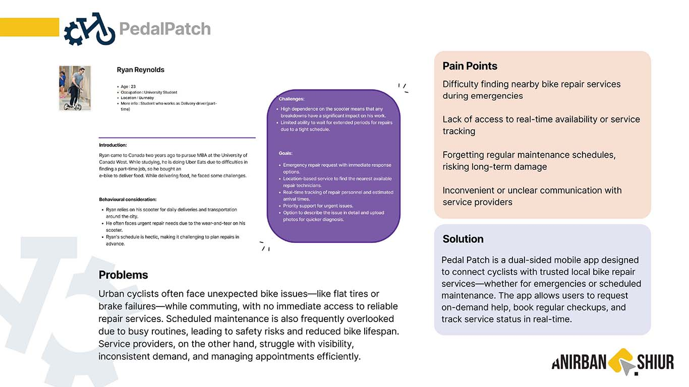
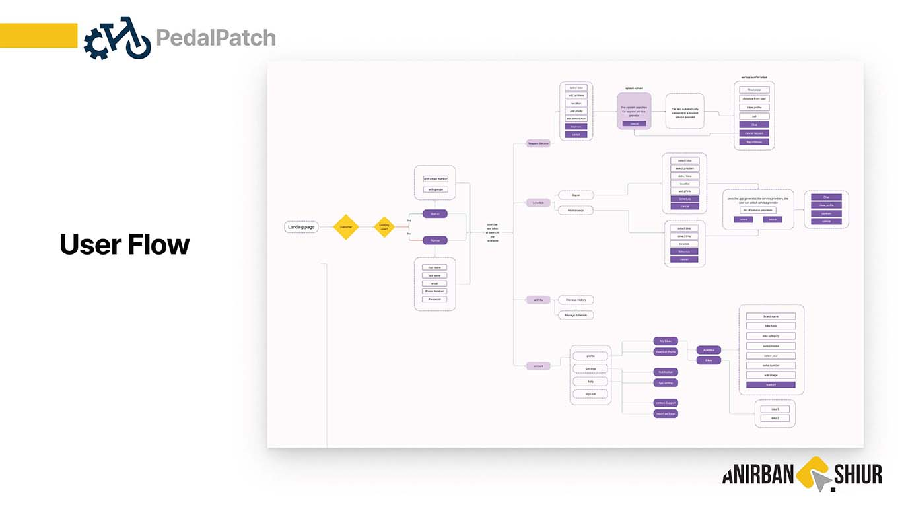
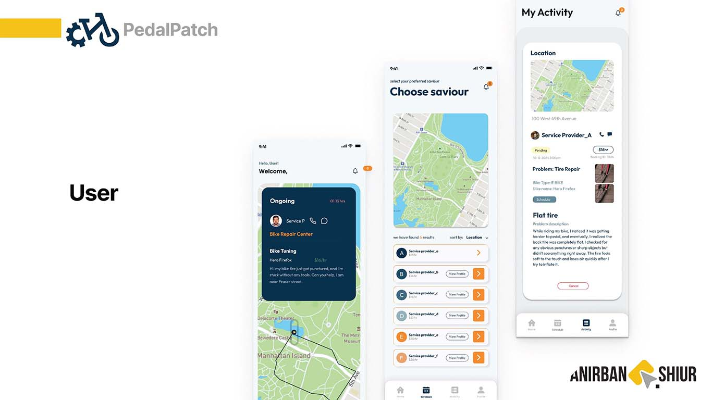
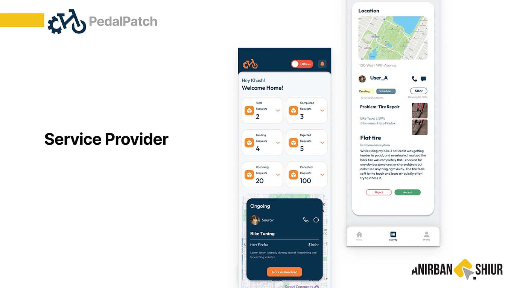

Pedal Patch
The goal of Pedal Patch is to provide cyclists with quick access to emergency bike repair and scheduled maintenance services through a reliable, location-based mobile app. By connecting users with nearby mechanics and service providers, the app aims to reduce downtime, promote cycling safety, and enhance the overall biking experience. This app earned the Best Technical Academic Award for its robust backend integration, efficient location-based service matching, and seamless user experience. It aims to make urban cycling safer and more convenient by reducing service wait times and promoting regular bike upkeep.

UX Resarchs
Persona

User flow

Mockups

Visual Design & UI Elements
